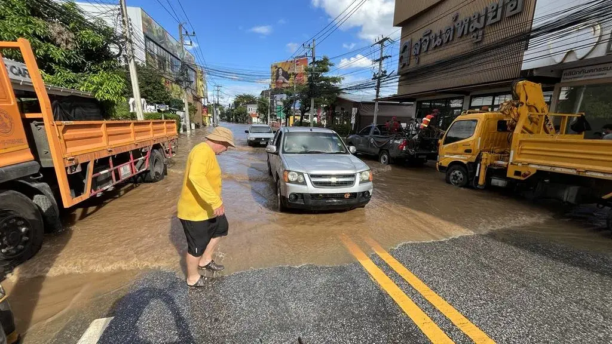
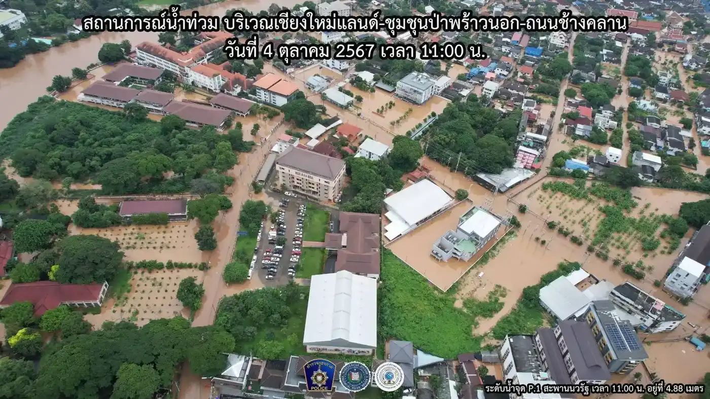
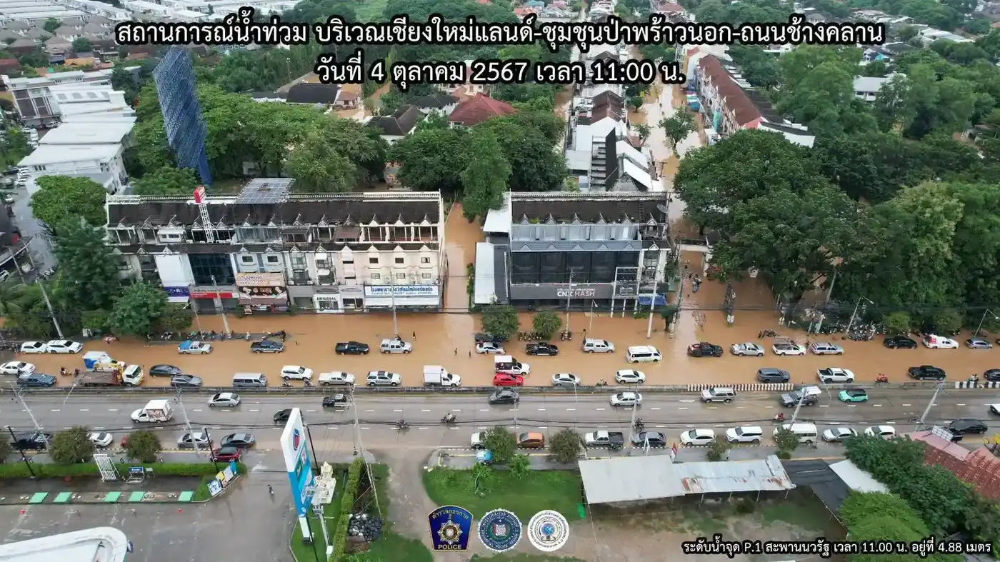
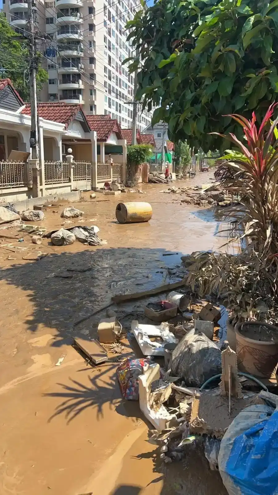
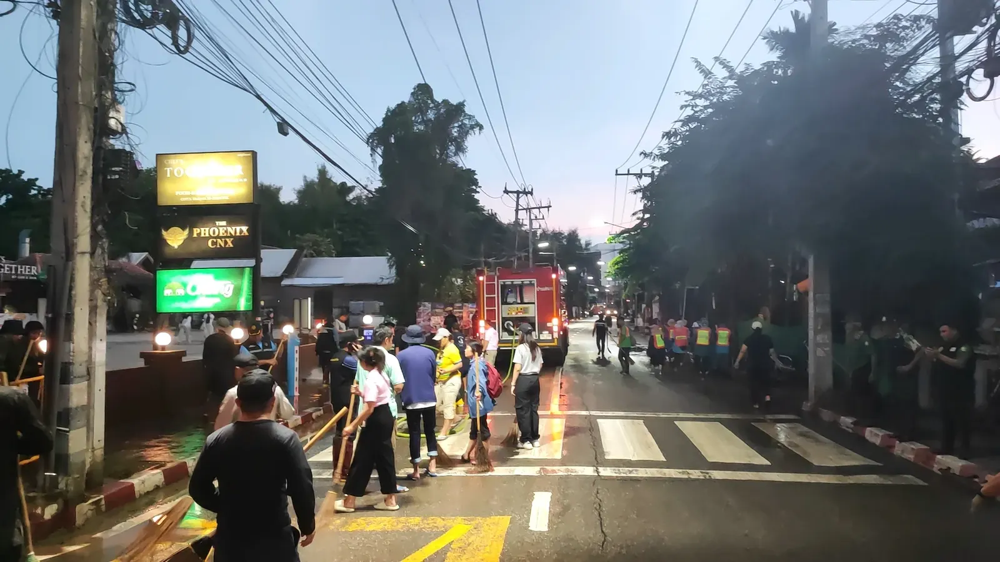

Late September and early October 2024 is the stretch every long-term Chiang Mai resident now refers to just as "the floods." Not smoky season, not Songkran. The floods. Two rounds of record water in under two weeks, the second one worse than the first, and a cleanup that ran for days after the water dropped.
I was out in it. Sandbagging, keeping roads clear so ambulances and rescue trucks could actually get through flooded sois, and then, once the water went down, shovelling mud with a volunteer crew. This is what it actually looked like, not the news version.
Photo credit: not all of these are mine. Many were shared by amazing contributors and fellow volunteers who were out there documenting the same streets during and after the floods.
Two Floods, Not One
The first hit on 25 September 2024. Heavy upstream rain pushed the Ping River over its banks and into low-lying parts of the city faster than most people expected. It was bad, evacuations happened, and then the water receded and everyone assumed that was the event.
It wasn't. A second system moved through in early October and put more rain into an already saturated catchment. The river came up again, this time more than 50cm higher than the September peak. Aerial monitoring shots from the Chiang Mai police taken on 4 October 2024 at 11:00am show the water level at the Nawarat Bridge gauge sitting around 4.88 metres, one of the highest readings the city has seen in decades. People who had just finished cleaning up from the first flood were doing it all again within a week, except worse.

Chang Klan and the Riverside Took the Worst of It
The Ping River runs straight through the city, and everything built low and close to it paid the price. Chang Klan Road, the Chiang Mai Land area, and the night bazaar side of the river were under brown water for days during the second flood. The police aerial shots from that week show entire blocks around Chiang Mai Land submerged, roads turned into rivers, and only rooftops and treetops breaking the surface in the worst-hit pockets.
Ground level looked different but just as bad: trucks and pickups pushing brown water in front of them down streets that are normally clogged with tuk-tuks and market traffic, shopkeepers standing in shin-deep water outside businesses that were closed for a week or more.

If you've lived here a while, none of this is entirely new. The Ping floods most rainy seasons to some degree. What made 2024 different was the scale and the second surge on top of the first, which meant sandbags and precautions that would normally have been enough simply weren't.
Police Region 5 filmed the river itself at the height of the second flood, from the Mahidol Road bridge, and it's worth watching if you want a sense of just how much water was moving through the city at peak:
Sandbagging and Keeping Roads Open
Once the first flood hit, the priority wasn't pretty, it was practical: keep at least one route open through every flooded soi so emergency vehicles could get to people who needed help. I spent days doing exactly that, filling and hauling sandbags, and rigging up whatever tools were on hand, at one point a rake and shovel tied to the back of a scooter because that was the fastest way to move gear between spots.
A lot of it was just being present and mobile. Roads that were passable in the morning could be underwater by afternoon as the river kept rising through the first week of October, so the work was constant rechecking, not a one-off job. I filmed this outside Bella Goose one morning after the worst of the flooding had passed, a quick look at the street conditions in the aftermath:
What Cleanup Actually Looks Like
The water dropping isn't the end of it, it's the start of the worse part. Every flooded home and shop ends up with a wrecked pile out front: sofas, mattresses, fridges, cardboard, whatever couldn't be saved, all caked in the same thick brown silt the river left behind. Streets that were rivers a few days earlier became ankle-deep mud tracks, and clearing that mud by hand, street by street, is what most of the following week looked like.

I joined up with the Chiang Mai Clean City volunteer network for this part. Crews worked street by street with brooms, shovels, and hoses, and the fire department brought trucks through to pressure-wash the worst of the mud off the road surface once it had been shovelled clear. Some of this happened at dusk, teams still out sweeping and hosing down streets as the light went, because there was simply too much ground to cover to knock off at a reasonable hour.

Local district offices became distribution points for water, supplies, and support during this stretch. The Kawila subdistrict office had pallets of bottled water stacked out front and volunteers coordinating from tables set up under the eaves, which is where a lot of the day-to-day organising for the cleanup actually happened.
Some residents in the worst-hit sois couldn't get out on their own at all, so trucks were used to move people and belongings out of flooded streets once the water was high enough to make walking or riding out impossible.
None of it was glamorous. By the end of most days I was caked in mud to the knees, and that was the norm for anyone doing the actual clearing work rather than just watching from dry ground.
Lessons for Anyone Living Here Long-Term
A few things worth knowing if you're planning to be in Chiang Mai through a rainy season (roughly June through October):
- Know your soi's flood history before you sign a lease. Chang Klan, the riverside sois near Chiang Mai Land, and low-lying stretches close to the Ping are the areas that go under first and worst. Ask neighbours or your landlord directly rather than assuming.
- Watch the river, not just the rain. The Royal Irrigation Department and Thai Meteorological Department both publish Ping River level updates, and a rise upstream can hit the city a day or more later. Heavy rain in Chiang Mai itself isn't the only warning sign to watch for.
- Have sandbags and a plan before September, not during it. By the time the water is rising, sandbags and sand are hard to source quickly and everyone else is after the same thing.
- Find your local volunteer network in a quiet month, not a crisis one. Chiang Mai Clean City and similar community groups organise fast once flooding starts, but knowing who to contact and where to show up before you need them makes you useful from day one instead of day three.
Guru Tip
If you want a genuine read on how bad flooding might get in a given rainy season, don't rely on Facebook chatter, check the Royal Irrigation Department's river level data directly. The 2024 floods were forecast in the gauge data well before the water hit the city both times. Long-term residents near the Ping who bookmark that page get a day or two of real warning that most people miss entirely.
Bottom Line
- Chiang Mai saw two rounds of record flooding in late September and early October 2024, the second one over 50cm higher than the first.
- The Ping River peaked around 4.88m at the Nawarat Bridge gauge, among the highest levels on record.
- Chang Klan, Chiang Mai Land, and low-lying riverside sois took the worst of it.
- The cleanup was mud, not water: days of shovelling silt, hauling debris, and volunteer crews working street by street with the fire department.
- If you're settling near the Ping, check flood history before you lease, and connect with a local volunteer network before rainy season, not during it.
Related: Smoky Season in Chiang Mai and All Neighbourhoods.
Frequently Asked Questions
When did the 2024 Chiang Mai floods happen?
The first flood hit Chiang Mai on 25 September 2024. A second, more severe flood followed in early October, with the Ping River rising more than 50cm above the September peak and hitting a record level around 4.88m at the Nawarat Bridge gauge on 4 October 2024.
Which areas of Chiang Mai were worst affected?
Chang Klan Road, the Chiang Mai Land area, and the low-lying sois on both sides of the Ping River took the worst of the flooding. These are the areas closest to the river and lowest in elevation, so they flood first and deepest whenever the Ping rises significantly.
Could flooding like this happen again in Chiang Mai?
Yes. The Ping River floods to some degree most rainy seasons (roughly June through October), and 2024 showed that back-to-back surges can push water well beyond what a single flood event would suggest. Anyone living near the river should monitor Royal Irrigation Department river-level data during rainy season rather than assuming one flood means the risk has passed.
How can I help or get involved if flooding happens again?
Local volunteer networks like Chiang Mai Clean City organise sandbagging, road-clearing, and post-flood cleanup crews. The most useful thing you can do is find and connect with one of these groups before flooding starts, so you already know where to show up and what's needed when it does.
Guru Tip
During the cleanup, district offices like the Kawila subdistrict office became informal hubs for water, supplies, and volunteer coordination, not just the well-known NGOs. If you want to help during a future flood, your local subdistrict (khet) office is often faster to mobilise and easier to reach than a citywide organisation, and they know exactly which streets in their own patch need people most.